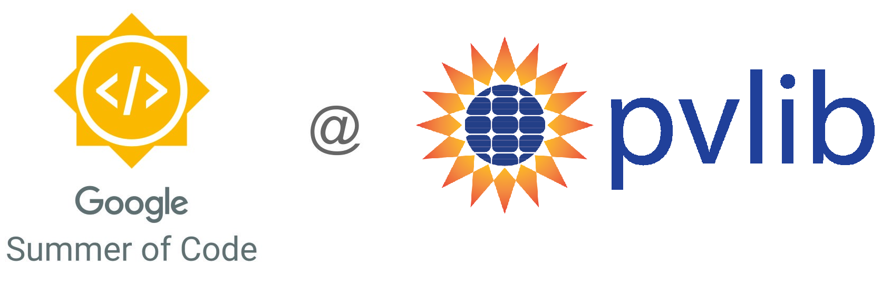

pvlib - a one-stop source for solar resource data#
This title at least represents the aim of my Google Summer of Code (GSoC) project that I will be completing during the next 10 weeks. In short, I’ll be extending pvlib python’s current iotools functionalities to provide users with easy and standardized access to all major open-source solar resource databases. 
And why would I do that, you ask? Well, first of all, I am a bit of a solar geek, but my primary motivation comes from frustration over how unnecessarily difficult it is to obtain good solar resource data. Fortunately, there is a lot of high-quality data out there, free for anyone to use! However, it currently requires a great deal of time and technical expertise to obtain the data, limiting its wider use.
Given that solar irradiance is the most important input to predicting solar energy yield, using suboptimal data is kinda a big deal. Solar resource data is not only essential to the design stage but is also crucial for benchmarking solar radiation models (decomposition models, forecasting techniques, etc.) and assessing system performance.
pvlib python already has a module called iotools for retrieving/reading solar data, but it currently only supports access to a few of the many available sources and covers a limited part of the world.
Data sources#
During the project, I’ll be adding functions to the iotools module within pvlib python, that will allow users to retrieve data from the following datasets (in addition to the existing ones):
Each of the above datasets have their own strengths and differs by geographical coverage, time resolution, and accuracy. If this sounds a bit overwhelming, fret not; this will be the topic of a later blog post.
Note
You can already check out some of the existing pvlib functions for retrieving data. For example, satellite-derived solar irradiance and clear-sky data from CAMS and ground measurements from the Solar Radiation Monitoring Laboratory (SRML) monitoring stations.
If you think that I’ve missed any important open-source datasets, please let me know in the comments section!
Google Summer of Code#
You might be wondering at this point what Google has to do with all this and you’d be right to do so. Google is not directly involved with the project but rather is the facilitator and sponsor of Google Summer of Code (GSoC) - a global program that aims at getting students to write code and take an active part in the open-source community.
During the 10-week program, students are paired with a mentor from a pre-qualified open-source organization, who guides the student through a specific project. This is where Kevin Anderson comes into the picture. Kevin is one of the core pvlib developers, and each week volunteers a few hours of his time where I get to pick his brain. He is truly a phenomenal guy, and he’s really the reason why this project exists.
If you’re interested, you can find my official GSoC project abstract here.
What’s next?#
I just completed adding CAMS support to pvlib python. CAMS provides satellite-derived solar radiation for Europe and Africa. But not only that, CAMS also lets you retrieve McClear clear-sky data for anywhere in the world. Hint: McClear is based on actual aerosol data and probably provides the best clear-sky data you will ever use.
Now that this has been completed, I have moved on to writing tests for the functions I’ve written for retrieving hourly data from PVGIS.
Stay tuned for more news on how you can easily get your hands on solar radiation data, and leave a comment below if you have any questions about getting started with retrieving CAMS data.